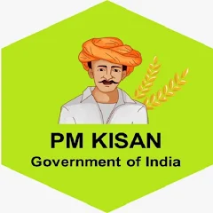

Support for Chhattisgarh farmers
Find the right support
for your farm.
Explore government schemes, understand eligibility, and find out how to apply.
Plain-language guidance Official application links
No matching schemes found.
Browse available support
Schemes for you
Explore support available to farmers and rural households.
Find support that fits your needs
Combine a support type with your location or farmer profile.
Filters help you explore relevant options; they do not determine eligibility. Confirm current rules, benefit amounts, and application dates with the official department.

Getting Money & Support
PM-KISAN (Pradhan Mantri Kisan Samman Nidhi)
PM-KISAN (Pradhan Mantri Kisan Samman Nidhi) is an Indian government scheme providing annual income support of ₹6,000 to farmer families, paid in three ₹2,000 installments directly into their bank accounts via DBT
Scheme detailsEligibility, benefits & documents
Eligibility Criteria
- Indian Citizen Farmer
- Land Ownership: Must own cultivable land in their name.
- Family Unit: A "farmer family" is defined as a household comprising a husband, wife, and their minor children (under 18 years of age)
- e-KYC Mandatory
Benefits
- Direct Financial Support: ₹6,000 per year per family in three ₹2,000 installments.
- Direct Benefit Transfer (DBT)
- Income Support
Required Documents
- Aadhaar Card
- Landholding Papers
- Bank Account Details
- Mobile Number
Apply online through PM-KISAN portal or visit nearest CSC Krishi Vigyan Kendra

Getting Money & Support
Pradhan Mantri Kisan Maan-dhan Yojana (PM-KMY)
The Pradhan Mantri Kisan Maan-Dhan Yojana (PMKMY) is a government pension scheme for small and marginal farmers (SMFs) aged 18-40, owning up to 2 hectares of land
Scheme detailsEligibility, benefits & documents
Eligibility Criteria
- Indian Citizen Farmer
- Age: 18 to 40 years
- Landholding:Small farmes with up to 2 hectares of farming land
- e-KYC Mandatory
Benefits
- Get ₹3,000 every month after turning 60 years old
- The government pays the same amount you contribute every month
- You receive a membership card after registration
- After the farmer's death wife/husband gets half pension
Required Documents
- Aadhaar Card
- Bank Account (linked with Aadhaar)
- Land Records
- Passport-size Photos
- Mobile Number
For apply visit common Service Centres (CSCs) in your village/town with documents

Protecting Your Crops & Finances
Pradhan Mantri Fasal Bima Yojana (PMFBY)
This scheme is crop insurance. If your crop gets damaged by rain, flood, drought, hailstorm, pest or disease, the government gives you money (compensation).
Scheme detailsEligibility, benefits & documents
Eligibility Criteria
- All Indian Citizen Farmer
- Land Record:Must have proof of land (like ROR, LPC) for the crop
- Loan Farmers (Loanee): Compulsory for those with Kisan Credit Card (KCC) or crop loans.
- Non-Loan Farmers (Non-Loanee): Optional, but must have land proof.
Benefits
- If crop gets damaged, you get money.
- Money comes directly to your bank.
- very Low Premium:max 2% for Kharif, 1.5% for Rabi, 5% for commercial crops
- Farming becomes safe — no fear of full loss.
Required Documents
- Aadhaar Card
- Land papers (Khatauni / Khasra / rent paper)
- Bank Passbook/Account Details.
- Details of which crop you sowed
- Your photo
Visit the official pmfby.gov.in or visit nearest CSC Krishi Vigyan Kendra/Bank

Protecting Your Crops & Finances
Soil Health Card Scheme
Get a free report on your soil's health to know exactly what food (fertilizer) and care (water, organic matter) it needs to give you the best harvest, saving you money and making your land stronger for the future.
Scheme detailsEligibility, benefits & documents
Eligibility Criteria
- Every farmer in India can get a Soil Health Card.
- Farmers with own land or rented land, both are eligible.
- No age limit, no fee for the card.
Benefits
- You get a report of your soil health.
- You know which nutrients are missing in your soil.
- You learn which fertilizer to use and how much to use
- Helps save fertilizer cost.
- Better planning for future crops.
Required Documents
- Aadhaar Card
- Land papers (Khatauni / Khasra / Patta / rent papers)
- Photo
- Mobile Number
Apply online through Soil Health Card website or Go to your nearest Agriculture Office / Krishi Vigyan Kendra / Soil Testing Lab → Give soil sample → They test it → You receive your Soil Health Card.

Loans Credit & Tools
Kisan Credit Card (KCC)
The Kisan Credit Card (KCC) gives farmers easy, fast loan money for farming needs like seeds, fertilizer, pesticides, and other expensesT
Scheme detailsEligibility, benefits & documents
Eligibility Criteria
- Any farmer doing farming.
- Farmers with own land or rented land..
- Tenant farmers, sharecroppers also eligible.
- Fisheries and livestock farmers can also apply.
Benefits
- Easy loan for farming needs (seeds, fertilizer, pesticide, etc.).
- Low interest rate on loan.b>
- Interest subsidy if loan is repaid on time
- Accident insurance (up to a certain limit).
- Loan available quickly during crop season.
Required Documents
- Identity proof (e.g., Aadhaar Card, Voter ID, PAN card, Driving License)
- Passport-size recent photo
- Address proof (e.g., Aadhaar Card, Voter ID, electricity bill, ration card)
- Land documents (Khatauni / Khasra / rent agreement)
- Bank Account Details
- Mobile Number
for apply Go to the nearest bank

Loans Credit & Tools
Agriculture Infrastructure Fund (AIF)
The Agriculture Infrastructure Fund (AIF) scheme provides affordable loans and support to help farmers and related groups build better storage, processing, and marketing facilities
Scheme detailsEligibility, benefits & documents
Eligibility Criteria
- Individual Farmers
- FPOs (Farmer Producer Organization) SHGs, cooperatives
- Agri-startups, entrepreneur
Benefits
- Loan available at very low interest (interest subsidy)..
- Long repayment time.
- Helps build storage, warehouse, cold store, processing units, custom hiring centers, etc.
Required Documents
- Aadhaar Card(Identity proof)
- Address-Proof
- Bank details / Passbook
- Land documents (if project is on own land)
- Project report / plan
- Photo
- Mobile Number
Apply through agriinfra.dac.gov.in Register your project → Upload documents → Submit → Bank reviews and approves AIF loan.

Water & Better Farming
Pradhan Mantri Krishi Sinchayee Yojana (PMKSY)
The Pradhan Mantri Krishi Sinchayee Yojana (PMKSY) is a government scheme to ensure every farm has assured water supply ("Har Khet Ko Pani") and to use water efficiently
Scheme detailsEligibility, benefits & documents
Eligibility Criteria
- Any farmer doing farming.
- Farmers with own land or rented land.
- FPOs, SHGs, and groups of farmers can also apply.
- Land must be used for agriculture.
Benefits
- Big subsidy on drip and sprinkler irrigation systems..
- Helps save water — “More crop per drop”
- Reduces irrigation cost.
- Better Water Use
Required Documents
- Identity Proof(eg.Aadhaar Card)
- Landholding Papers
- Bank Account Details
- Photo
- Other (if applicable)
- Mobile Number
Apply through PMKSY online portal OR Contact your local Block/District Agriculture Office or call the Kisan Call Centre (Toll-Free No. 1800-180-1551)

financial assistance (input subsidy)Chhattisgarh Government
Rajiv Gandhi Kisan Nyay Yojana (RGKNY)
RGKNY is a help scheme by the state government (in Chhattisgarh) that gives money support to farmers for certain crops. The idea is to help farmers earn more and make farming profitable.
Scheme detailsEligibility, benefits & documents
Eligibility Criteria
- Be a permanent resident of Chhattisgarh state
- Be a farmer of any category (marginal, small, or large) or a forest lease holder.
- Be above 18 years of age.
Benefits
- Gives farmers direct money help to cover the cost of farming..
- Helps farmers earn more profit from their crops.
- Covers multiple Kharif crops
Required Documents
- Aadhaar Card
- Land records (e.g., B-1, loan book)
- Bank Account Details
- Mobile Number
- Passport-size photograph
Go to the official RGKNY portal download or fill the application form attach the required documents, and submit it to the local Rural Agriculture Extension Officer (RAEO) or the Gram Panchayat Secretary for verification

(financial assistance) Chhattisgarh Government
Rajiv Gandhi Gramin Bhoomihin Krishi Majdoor Nyay Yojana (BGKMNY)
The Rajiv Gandhi Gramin Bhoomihin Krishi Majdoor Nyay Yojana (BGKMNY) is a Chhattisgarh government scheme providing financial aid to landless agricultural laborer families
Scheme detailsEligibility, benefits & documents
Eligibility Criteria
- permanent residents of Chhattisgarh state.
- Should be 18 years or older
- Must work as a farm laborer (agriculture work)
- The family must not own agricultural land.
Benefits
- Eligible families receive an annual financial assistance of ₹7,000 (initially ₹6,000, later increased)
- Improves income of landless laborers.
- Direct Benefit Transfer (DBT)
Required Documents
- Aadhaar Card
- Passport size photo
- Bank Account Details
- Mobile Number
- Permanent residence certificate (Domicile certificate)
- Landless certificate or proof of being a farm laborer
eligible family, register on the official Rajiv Gandhi Gramin Bhoomihin Krishi Majdoor Nyay Yojana portal or submit the completed application form with required documents to their Gram Panchayat/Agriculture Office.
Central government · Solar energy
PM-KUSUM
Supports solar energy solutions for agriculture, including solar pumps and other components. Component availability and farmer contribution depend on current state implementation.
Scheme detailsComponents, eligibility & next steps
Who may be eligible
- Farmers and eligible farmer groups, subject to the component and current state notification.
- Land, grid connection, and other requirements vary by component.
Potential support
- Solar pumps, solarisation, or decentralised renewable energy projects under different components.
- Subsidy and contribution amounts are set by the active state programme.
Before applying
- Check the current PM-KUSUM component window and Chhattisgarh implementation notice.
- Keep land, identity, and bank records ready if required by the notice.
Confirm current component availability and application steps with the state renewable-energy agency or agriculture department before paying any vendor.
Central government · Farm equipment
Sub-Mission on Agricultural Mechanization (SMAM)
Supports access to agricultural machinery and mechanisation services. Agricultural drones may be included when listed in the current approved equipment notice. Assistance and subsidy rates depend on state guidelines.
Scheme detailsSupport, eligibility & next steps
Who may be eligible
- Farmers and eligible groups or custom-hiring centres, as specified in the active notice.
- Equipment and applicant rules can differ by programme year.
Potential support
- Assistance for eligible agricultural machinery or access through custom-hiring services.
- Approved equipment lists and subsidy amounts must be checked in the current notice.
Before applying
- Confirm the machinery list, application dates, and vendor requirements with the district agriculture office.
- Do not purchase equipment before checking whether prior approval is required.
Check the official Agricultural Mechanization portal and your district agriculture office for current Chhattisgarh application details.
Chhattisgarh state · Paddy support
Krishak Unnati Yojana
State support associated with paddy procurement and price-difference assistance for eligible farmers. The reference information cites ₹3,100 per quintal; verify the current season's notified price, eligible quantity, and payment rules before making decisions.
Scheme detailsPaddy support, eligibility & next steps
Who may be eligible
- Eligible Chhattisgarh farmers registered for the relevant procurement season.
- Land and crop registration records must meet the current state rules.
Potential support
- Price-difference or related assistance as notified for the season.
- Amounts and procurement limits may change; they are not guaranteed by this summary.
Before applying
- Check the current procurement and registration notice with the state or local procurement centre.
- Keep updated land, crop, bank, and farmer-registration records.
Confirm the current season's procurement rate, quantity limits, and payment schedule with the Chhattisgarh agriculture department or your local procurement centre.
Chhattisgarh state · Solar pumps
Saur Sujala Yojana
Chhattisgarh's solar-pump programme supports eligible farmers with subsidised pump systems. Pump capacity, beneficiary contribution, and priority rules depend on the current CREDA notice.
Scheme detailsPump options, eligibility & next steps
Who may be eligible
- Farmers who meet current state programme and site requirements.
- Category-based priority or subsidy differences must be checked in the latest official notice.
Potential support
- Subsidised solar pump systems, subject to availability and approved capacity.
- Do not assume a particular pump size or subsidy percentage without a current sanction.
Before applying
- Confirm application dates, beneficiary contribution, pump capacity, and approved vendors with CREDA.
- Keep land, identity, and water-source information ready if requested.
Apply only through the current CREDA or state-authorised process. Verify vendor authorisation and payment instructions with CREDA before proceeding.
Chhattisgarh state · Landless workers
Deendayal Upadhyaya Bhoomihin Krishi Majdoor Yojana
Financial assistance for eligible landless agricultural labourer families in Chhattisgarh. Registration conditions, assistance amounts, and application windows should be confirmed for the current year.
Scheme detailsLandless workers, eligibility & next steps
Who may be eligible
- Landless agricultural worker families meeting current state residence and work criteria.
- Family and landholding definitions are determined by the latest state guidelines.
Potential support
- Direct financial assistance if the household is approved under the current programme.
- Benefit amounts and payment schedules can change.
Before applying
- Ask the Gram Panchayat or district agriculture office about current registration and verification.
- Residence, identity, bank, and landless-worker proof may be requested.
Check the latest scheme name, application status, and required documents with your Gram Panchayat or district agriculture office.
Chhattisgarh state · Crop credit
Zero-interest Crop Loan
The state-supported crop-loan programme is offered through cooperative banks and PACS. Eligibility, interest support, loan limits, and repayment conditions depend on current rules.
Scheme detailsCredit, eligibility & next steps
Who may be eligible
- Farmers meeting cooperative-bank and current crop-loan requirements.
- Loan limits and eligible crops are set by the lending institution and state rules.
Potential support
- Interest support may apply when loan and repayment conditions are met.
- Confirm the effective interest rate and due date before accepting a loan.
Before applying
- Contact your District Cooperative Central Bank or PACS for current terms.
- Ask for the written repayment schedule, fees, and applicable interest conditions.
Apply through your local PACS or District Cooperative Central Bank and request written confirmation of current loan terms.